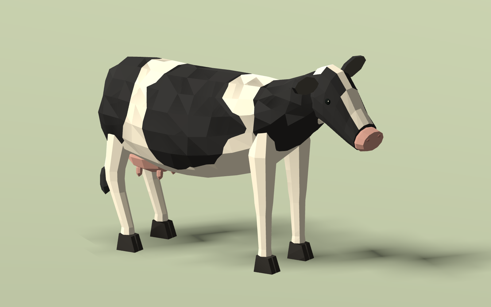
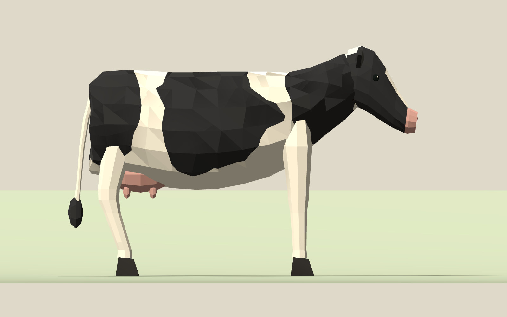
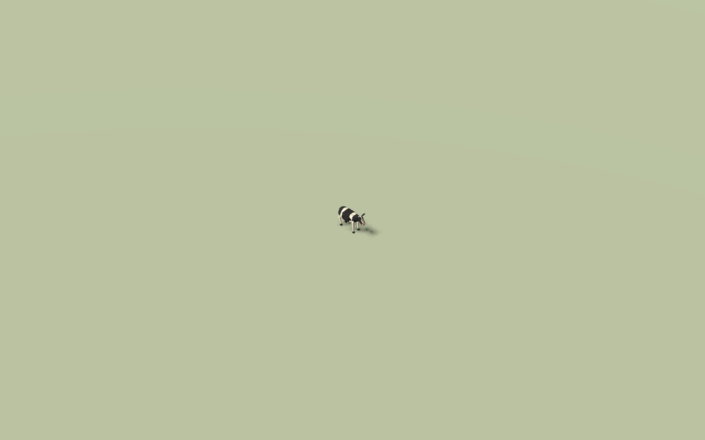

Actual Godot renders with matching cameras, lighting and scale. Ears and legs unchanged; ears follow the new head angle. No gameplay integration.



Idle, WalkPreview and Alert remain preview actions, not finished locomotion.